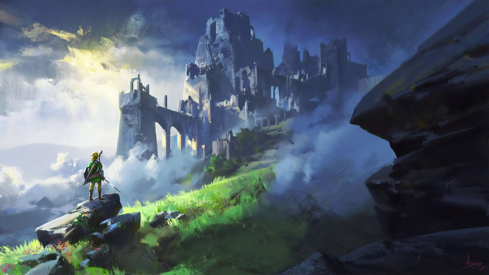

Приключения ждут! — Жанр Adventure
Жанр Adventure, или приключенческий жанр, охватывает невероятно широкий спектр игр, объединенных общей чертой: фокусом на истории, исследовании и решении головоломок. От классических point-and-click приключений до масштабных open-world игр, Adventure предлагает захватывающие истории и увлекательный игровой процесс.
Поджанры и особенности
Внутри жанра Adventure выделяются несколько поджанров, каждый со своими особенностями:
- Point-and-click: Классические приключения, где игрок управляет персонажем, кликая на объекты и взаимодействуя с окружением. Упор на головоломки, диалоги и сюжет.
- Action-Adventure: Сочетание приключений с элементами экшена. Больше фокуса на боевых действиях, но сюжет и исследование остаются важными компонентами.
- Open-world Adventure: Игрок имеет свободу передвижения по большому открытому миру, исследуя его и выполняя задания в произвольном порядке.
- Narrative Adventure: Упор на повествование и выбор игрока, влияющий на ход сюжета. Часто с минимальным взаимодействием с окружением.
Примеры игр
Вот лишь некоторые представители этого разнообразного жанра:
- The Legend of Zelda: Breath of the Wild: Масштабный open-world Action-Adventure с огромным миром для исследования.
- The Last of Us Part II: Захватывающая Action-Adventure с сильным сюжетом и напряженным геймплеем.
- Red Dead Redemption 2: Open-world Action-Adventure с детально проработанным миром и богатым сюжетом.
- Uncharted 4: A Thief's End: Action-Adventure с кинематографичным геймплеем и захватывающей историей.
- Grim Fandango: Классическая point-and-click Adventure с уникальной стилистикой и запоминающимся сюжетом.
- Broken Sword: Популярная серия point-and-click игр с увлекательными загадками и интересным сюжетом.
- The Walking Dead (Telltale Series): Narrative Adventure с выбором, влияющим на ход истории и судьбы персонажей.
- Life is Strange: Narrative Adventure с элементами тайм-тревела и сильным сюжетом.
- Firewatch: First-person Adventure с красивой графикой и захватывающей историей.
- Journey: Уникальная Adventure-игра без диалогов, где игрок исследует загадочный мир.